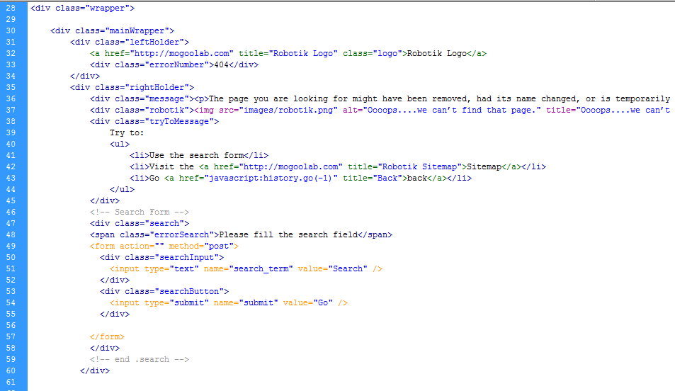

Created: 02/10/2011
By: MogooLab
Email: lab@mogoolab.com
Web: www.mogoolab.com
If you have any questions that are beyond the scope of this help file, please feel free to email via my contact form here. Thanks so much!
This theme is a fluid layout with a center vertical aligment. All of the information within the main content area is nested within a div with a class of "wrapper". The main content is within a div with a class of "mainWrapper".
The main positioning of the elements are located in style.css. Theme colors are located in themes/<theme_name>/css/style.css. The background styles are located in backgrounds.css
Many browser interpret the default behavior of html elements differently. By using a general reset CSS file, we can work round this. This file also contains some general styling, such as margins, paddings, font-size, floating, background-color, font-color, border-color and images. Keep in mind, that these values might be overridden somewhere else in the file.
To change the color theme go to <link rel="stylesheet" type="text/css" media="all" href="themes/<theme_name>/css/style.css" /> in 404.html and load the desired theme. Available themes: blue, gray, green.
To change the background scheme go to add class property to the body tag. (<body class="schema_name">). Available schemas: square, hash, rhash, line, dline, vline.
CSS structure:
/* Reset default browser CSS */ ... /* page Wrapper */ ... /* content wrapper */ ... /* left holder - Logo, 404 Error */ ... /* right holder - Message, Robot, Try to, Search Form */ ... /* your logo */ ... /* robot message holder */ ... /* robot message text */ ... /* error 404 */ ... /* try to */ ... /*search holder */ ... /* search input */ ... /* search button */ ... /* footer copy */ ... /* footer menu */
If you would like to edit a specific section of the site, simply find the appropriate label in the CSS file, and then scroll down until you find the appropriate style that needs to be edited.
Any images that are placed within the template are located in images (default theme) and /theme/<theme_name>/images for other themes. If you would like to edit the display of these images, find the "background" CSS property in the style sheet.
This theme imports three Javascript files.
jQuery is a Javascript library that greatly reduces the amount of code that you must write.
All JS functions are called inside the /theme/js/jquery-global.js file.
As I said at the beginning, I'd be glad to help you if you have any questions relating to this theme. No guarantees, but I'll do my best to assist.
MogooLab